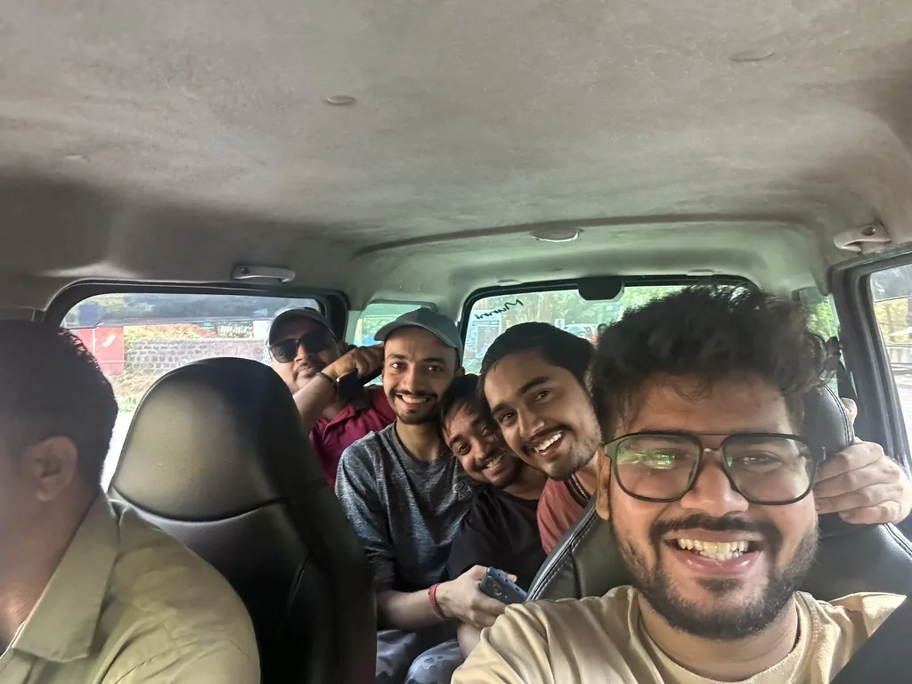
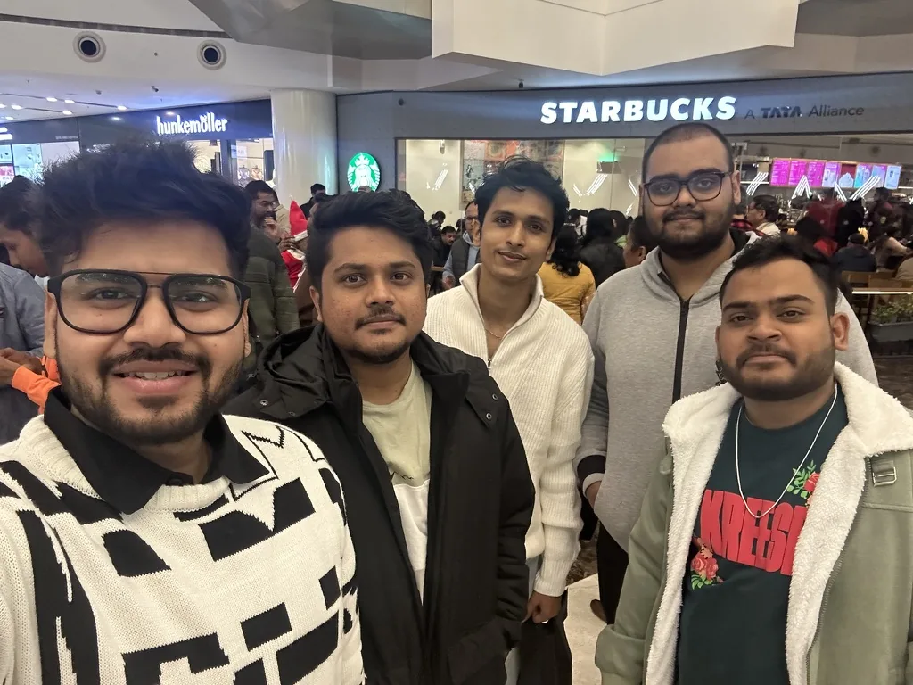
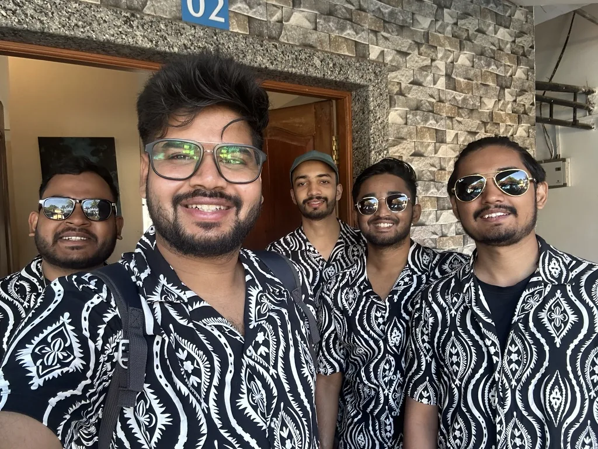
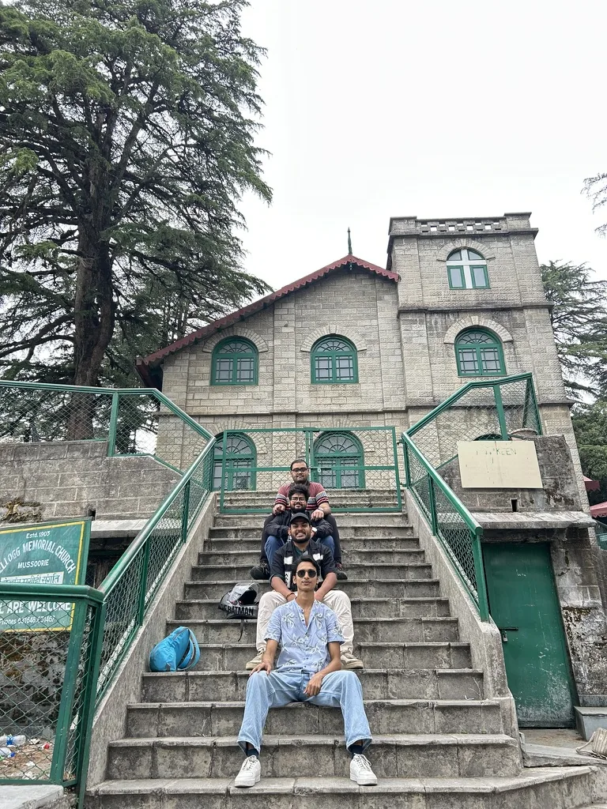
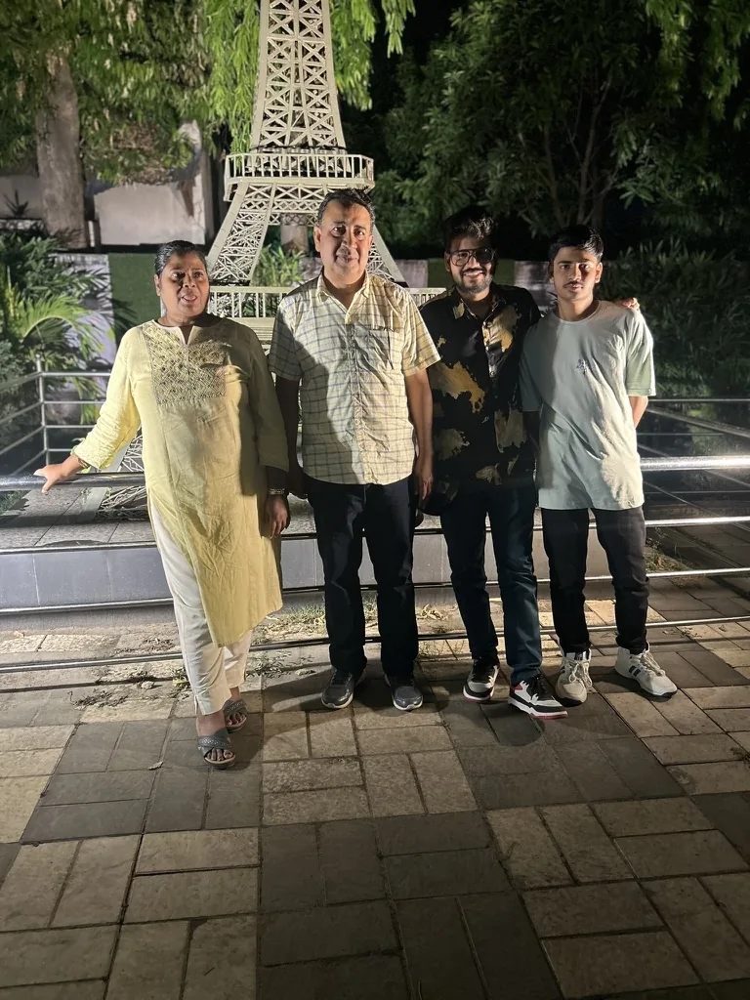

I will be turning twenty-five this year, and twenty-five is not old. But it is old enough to have been wrong about important things, to have lost people you thought would stay, and to have built something from the wreckage of plans that didn't survive contact with reality. This is the journal of my failures as a 25-year-old and the lessons that are still shaping my future.
IT'S OK TO DOUBT YOURSELF
A lot will go wrong before even one thing goes right, and it's okay. Doubting your decisions is not a sign of impending doom but a strong indicator that you care about the outcome. And even if the outcome is not what you wanted, what did you really lose? There is far greater learning in failures than there is in successes. Over the past few years, I have made decisions that have made me second-guess myself and my potential; resigning from my job and preparing for an unfamiliar CAT exam are prime examples of this. I was scared to the point of giving up, skipping exams, or even rejoining my work, but looking back, it all did work out in the end.

Your taste will always outrun your skill
You can see the gap. Between what you make and what you know is possible. Between the design in your head and the one on the screen. This gap is not a flaw—it is proof that your standards are higher than your current ability, and that is exactly the tension that drives growth. The danger is not in having the gap; it is in letting it convince you to stop. Whenever I sit down to design a new piece, I ingest so much content to draw inspiration from, but I always end up with a design that is not even close to what I imagined. But the design I end up with is still better than what I could have made a year ago. Treat this as a compass pointing you toward the next level, and not a failure of living up to your potential.

The family you choose for yourself.
Your friends, or homies, whatever you call them. They are essentially the family you choose for yourself. They will be there during your highs demanding treats, and in your lows, laughing at you first, but consoling you nonetheless. I made the mistake of pushing them away a few years back at my lowest, and damn, if only I knew then what I know now. No matter what you are going through, these people will have either one of two things for you: a solution or a place to sit and talk. They might not be in touch on a daily basis, but they will be there the moment you need them. Love them, cherish them, laugh with them, and don't forget to laugh at them!
.jpg)




Your Biggest Strength.
The family you are born into. Your mom may not always hold you like she used to when you were little, your dad may not always praise you like he used to, and your siblings may not say 'I love you' so often now, but they will be the ones you find standing behind you at every step. There will be times when you will feel like they don't understand you, they don't see the world like you do, but remember they are also experiencing life for the first time just like you, and unlike you, they often don't have the luxury to fall back on their parents for decisions that they find difficult to make on their own. Love them as they love you, support them as they support you. I can't be grateful enough to my family for making me who I am, and I am sure you feel the same about yours.
Heartbreak Syndrome
Falling in love is easier than staying in love; sometimes your partners outgrow you. The strong ones will move on easily, but the attached ones will keep searching for answers as to what they could have done differently to keep them in their lives. But the truth is, those answers don't exist, and I know it's difficult to accept this and move on. Especially when you've planned your whole life around them—their absence just feels like a void. But you need to allow new people to come into your life, experience life again, and remember that chapter as an essential part of your journey that taught you to grow and to see the world in a different light without them. One heartbreak won't define how you feel about life, but it will define how strong you can be.

Academics are important; skills are more important.
As soon as I completed my B.Tech in Mechanical Engineering, I joined JSPL. Assuming I would be working in my own domain, I was ecstatic, but soon I received the call that I would be posted in Steel Casters. Entering a metallurgy-heavy space, I thought I would struggle to adapt, but that's exactly when my skills came in handy. Being a quick learner, I quickly picked up the basics and started taking up small responsibilities, eventually taking on the big ones. My skills earned me a place in that competitive environment, as well as two prestigious awards and a strong reputation across the entire department. Skills will take you places where your degree can just get you through the door.
"Twenty-five years is not a milestone. It is a checkpoint. A place to pause, look at the map, and acknowledge that you've been walking in roughly the right direction—even when it didn't feel like it. The lessons here are not finished. They are still being written, one frame at a time."